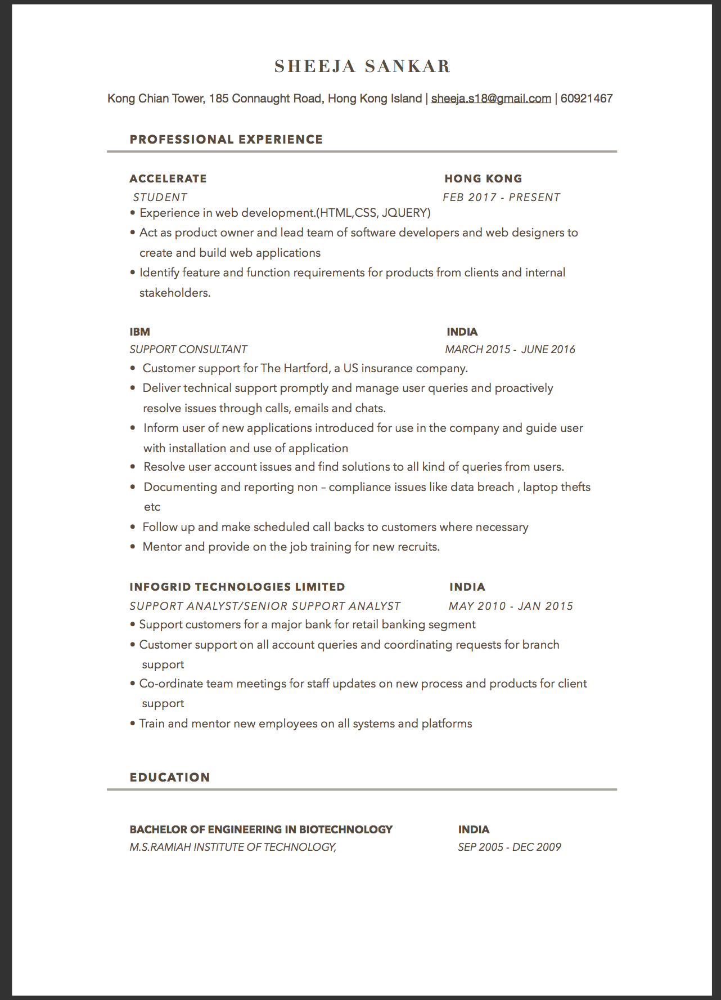

Little about me....
I’am currently a student at Accelerate Coding Bootcamp in Hong Kong.I am drawn to the overlap between development and management.
My skills include Front end development and product management.
I enjoy and love building sites and mobile apps using HTML, CSS and J query and
product management skills gives me the ability to combine business, technology, and design in order to discover a product that is valuable, feasible, and usable.
Outside of work I love to travel and understand the cultures around the world, practise yoga, read books .
To see my resume click here .
Click here to hide resume
